7 September 2026 · Current localhost prototype · Read-only audit
The interface is a useful base. The walkthrough and financial state need repair.
The review used actual pointer interactions in the Codex in-app browser and saved the screenshots shown below. An independent source review confirmed the financial projection and filter bugs. The app source has not been edited.
Priority changes
- Preserve the 15,000 USDC residual after S3 confirmation and keep it visible in All.
- Calculate from signed events; never overwrite activity or clamp reverse obligations.
- Provide a clear start, step counter, next action, and chronological event replay.
- Use one approval dialog and make navigation, summaries, names, and time labels consistent.
- Keep the current design system while improving presenter legibility and avoiding horizontal overflow.
The proposed calculation
Current obligation = opening obligation + signed venue activity − signed confirmed settlements
Approval, skipped windows, submission, and unknown status do not change that amount. Instructions are separately tracked. Positive means Northstar owes Atlas; negative means Atlas owes Northstar.
| Event | Obligation | Payment in progress |
|---|
| Net activity accrued | 110,000 | None |
| Instruction submitted | 110,000 | 110,000 |
| New activity +15,000 | 125,000 | 110,000 |
| Outcome unknown | 125,000 | 110,000 · unknown |
| Original payment confirmed | 15,000 | None |
Captured flow
Expand a step to inspect the exact screenshot. All amounts are illustrative USDC.
1. Initial queue · Needs correction
The visual hierarchy is clear, but All 3 shows only two rows, Cedar is labeled Northstar owes Atlas, and the fixed presenter strip gives no clear first step.
Proposed change: Repair filtering and client-specific direction; add explicit start guidance.
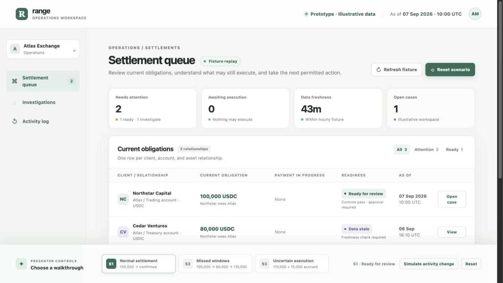
2. Case detail · Usable base
Current obligation and payment in progress are separated well. The source calculation and presenter journey are not visible; important payment detail and investigation content require scrolling.
Proposed change: Keep the layout, add a concise next action, and provide an expandable event calculation.
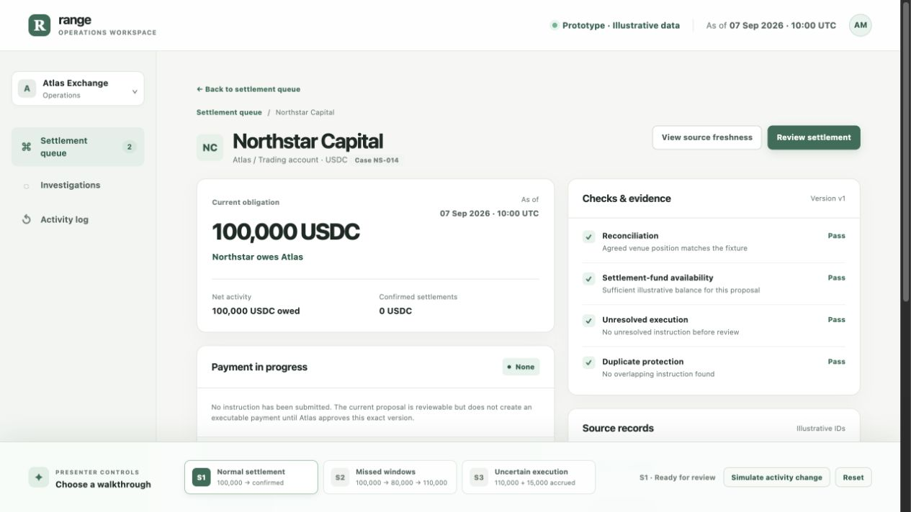
3. Review proposal · Mostly clear
Amount, destination, cutoff, and evidence version are visible. This should be the single operational approval dialog.
Proposed change: Retain exact proposal review and guard submission against changed evidence.
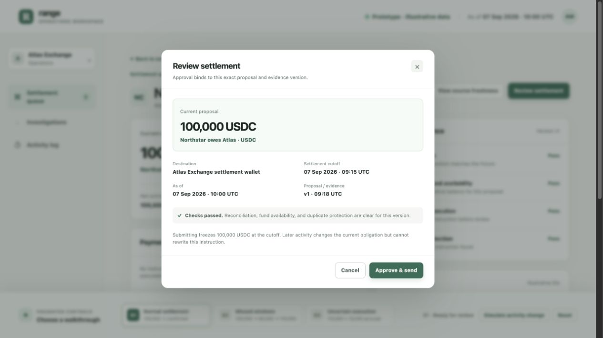
4. Additional mock confirmation · Unnecessary friction
Approve and send leads to a second dialog and an acknowledgment checkbox. This interrupts the demonstration; Back closes the review instead of returning to it.
Proposed change: Use one review dialog with a clearly simulated approval action.
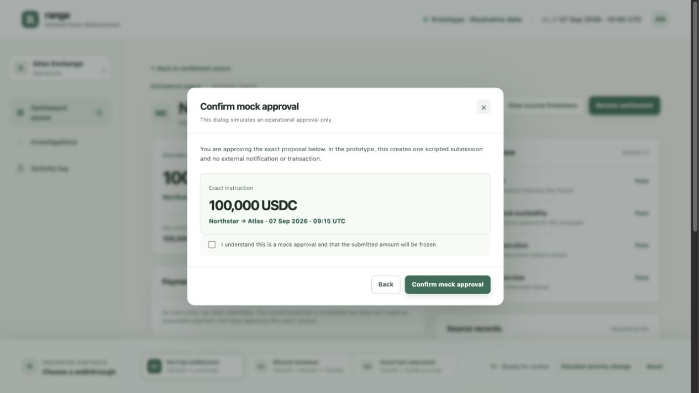
5. Submitted payment · Contradictory messaging
The submitted amount is frozen and another send is absent, which is correct. Checks still describe no unresolved instruction before review and guidance remains about an unsubmitted proposal.
Proposed change: Distinguish recorded approval checks from current eligibility and update the next action.
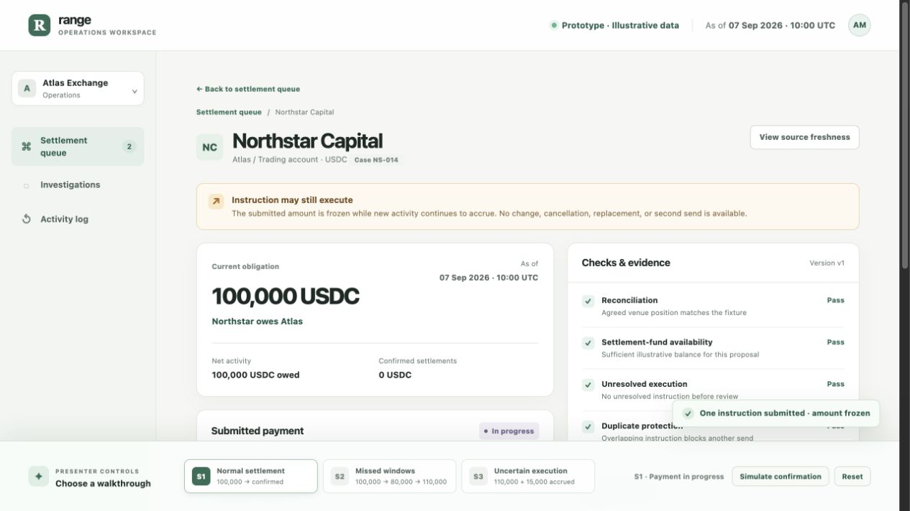
6. Normal confirmation · Balance right; breakdown wrong
S1 correctly shows zero owed after paying 100,000, but Net activity changes to zero even though the 100,000 trading activity still occurred. The confirmed payment note continues saying it is included in the current obligation.
Proposed change: Calculate from preserved events and render confirmed payments as history.
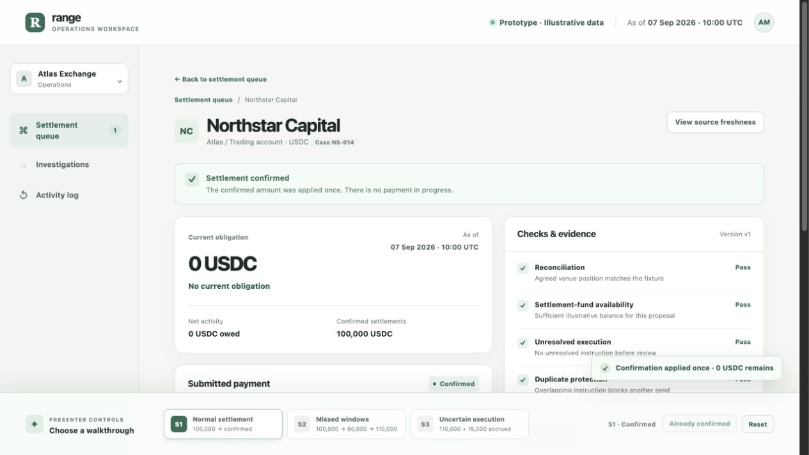
7. Missed windows · Walkthrough missing
Selecting S2 jumps directly to 110,000. There is no path through 100,000, skipped approval, minus 20,000, another skipped window, and plus 30,000.
Proposed change: Replay the actual events with Previous, Next event, and a named operator-action step.
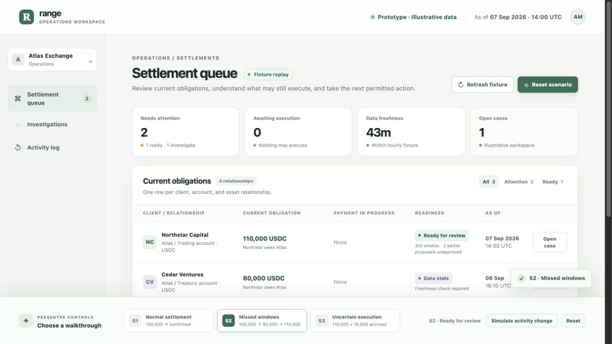
8. Unknown-payment queue · Contradictory summary
The row correctly shows 125,000 owed and 110,000 with an unknown outcome, but Awaiting execution 1 still says Nothing may execute. The page has horizontal overflow at the observed laptop viewport.
Proposed change: Derive summary copy from live state and fix layout sizing.
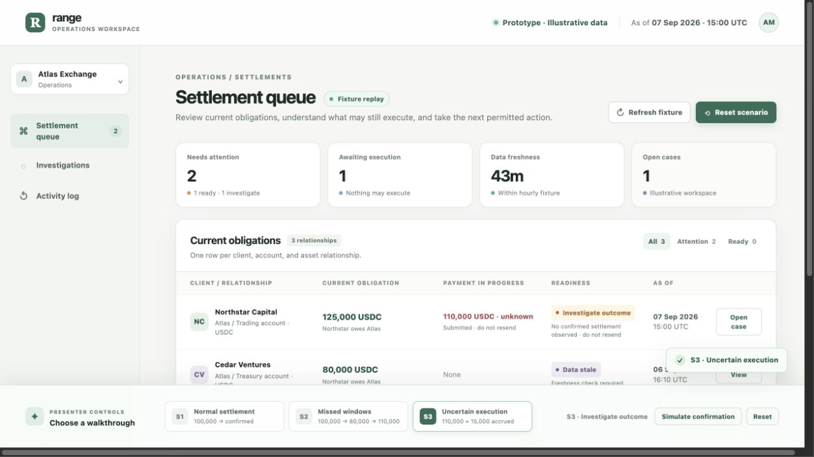
9. Unknown-payment case · Sound core boundary
The warning correctly says no observation does not prove non-execution. The action is blocked. The full investigation is farther down and the only prominent presenter action can jump directly to confirmation.
Proposed change: Guide the presenter to the investigation before simulating a later outcome.
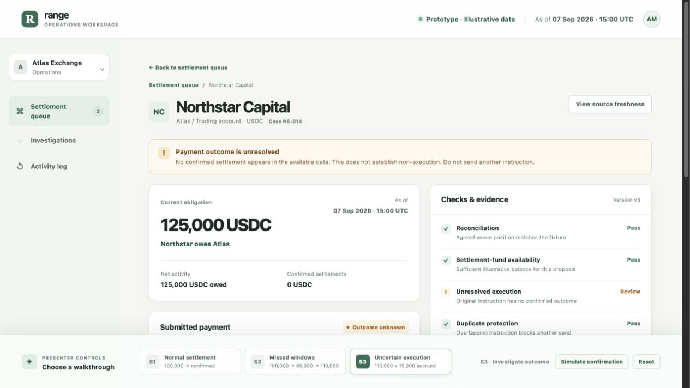
10. Investigation and handoff · Useful foundation
Facts, possible explanation, missing information, and recommended action are separated. Escalation records a simulated handoff. Source event arithmetic remains absent and supporting text is small for screen sharing.
Proposed change: Keep this structure, connect the evidence, improve legibility, and expose the next step.
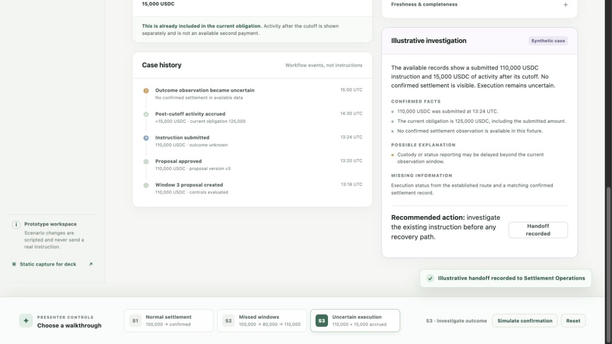
11. Queue after S3 confirmation · Presentation blocker
After confirming 110,000, 15,000 remains owed, but Northstar disappears from All. Only Cedar is shown while the counter still says All 3.
Proposed change: Keep relationships visible in All and derive readiness from residual balance and current controls.
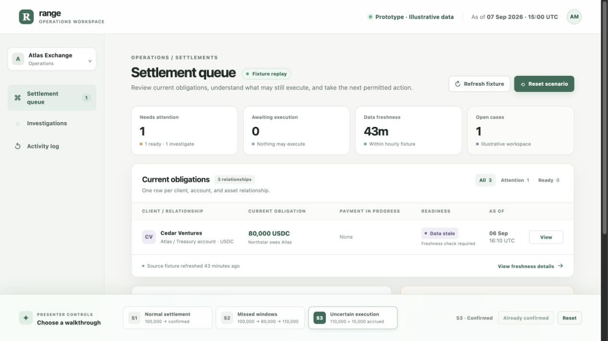
12. Case after S3 confirmation · Presentation blocker
The case displays 0 USDC and No current obligation while the lower breakdown says 15,000. Correct result: 125,000 minus 110,000 equals 15,000.
Proposed change: Use the same signed event projection for the queue, case, breakdown, and guidance.
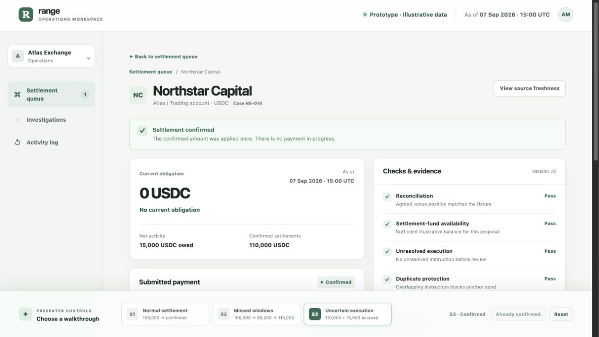
Evidence limits
This is a pointer-flow and visual review of the current synthetic site, plus a source inspection. It does not establish live settlement behavior, production idempotency, full keyboard accessibility, contrast compliance, or responsiveness across devices. Those checks are in the proposed implementation acceptance plan.
The fallback page was not visually audited during this run.